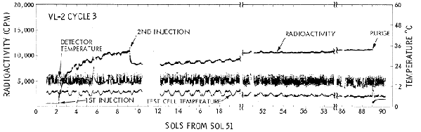
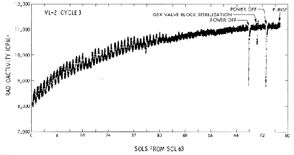
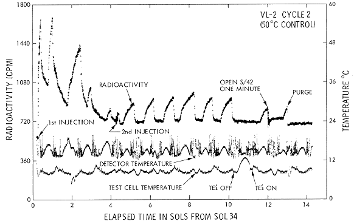
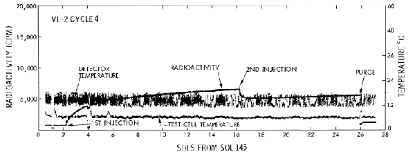
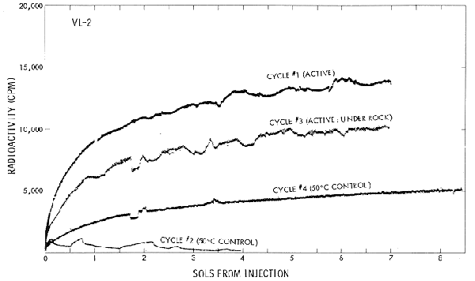
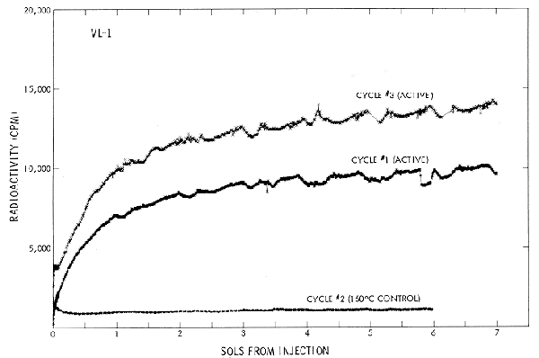
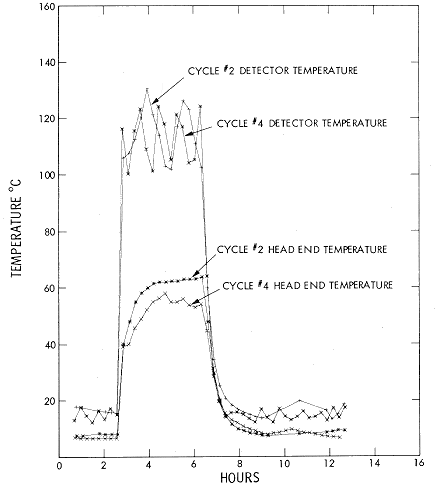
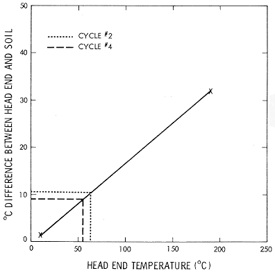

|
The Labeled Release (LR) life detection experiment seeks detection of heterotrophic metabolism by monitoring radioactive gas evolution following the addition of a radioactive nutrient containing seven 14C-labeled organic substrates to surface material. Extensive terrestrial tests in flightlike equipment have previously established the characteristics of typical LR biological responses and their abolition following heat treatment of the organism-containing soil for 3 hours at 160°C. The nutrient utilized in the test, as well as the scientific concepts and instrumentation of the experiment, has been described elsewhere [Klein et al., 1976; Levin, 1972; Levin and Straat, 1976a, b].
LR results obtained on Mars prior to conjunction [Levin and Straat, 1976b] showed rapid evolution of radioactive counts upon addition of the radioactive nutrient to a fresh surface sample. At both landing sites the responses were quite similar, and the magnitude of the evolved counts was consistent with utilization of only one of the labeled carbon atom positions available in the nutrient. Although radioactivity was continuously evolved, even over a 60-sol (1 sol equals 24.6 hours) incubation period, no evidence was seen of exponential growth. In one cycle, which utilized a surface sample obtained from under a rock, the initial LR response was essentially identical in kinetics and magnitude with those of other active samples; this indicates that if a chemical reaction is responsible for the LR results, its activity does not depend upon recent ultraviolet activation. Further, the 'active' agent(s) in the Mars sample is stable to 18°C but completely inactivated by 3 hours of heating at 160°C and substantially reduced following similar pretreatment at 50°C. This behavior is consistent with a biological response, although it has been postulated [Klein et al., 1976; Levin and Straat, 1976b] that a limited number of nonbiological reactants could produce such results.
Since our last data summary [Levin and Straat, 1976b] prior to conjunction, two additional cycles have recently been completed for the Labeled Release experiment on Mars. The results, summarized below, provide further information on the gas kinetics following a second injection of nutrient and on the effect of 'cold sterilization' of the Mars surface material.
VIKING LANDER 2, CYCLE 3
The third LR cycle on Viking Lander 2 (VL-2) was initiated prior to conjunction by using a fresh sample obtained from under Notch rock. The data obtained over 7 sols following the first injection
have been previously presented along with interpretations of the results [Levin and Straat, 1976b]. After these 7 sols a second aliquot of nutrient was then added to the sample,
and incubation was continued for the ensuing 80 sols, all data being accumulated on the lander tape recorder for playback to earth after conjunction. This extensive incubation period provided
an opportunity to examine in detail the kinetics of gas evolution following the second injection.
The complete results for VL-2, cycle 3, are shown in Figure 1 on a scale identical with those used [Levin and Straat, 1976b] for all previous cycles. As is shown, immediately upon the second injection a spike of radioactivity was observed, followed by a rapid disappearance of approximately 35% of the volume of
radioactive gas previously evolved. This percentage drop is essentially the same as that seen following second injections for all active cycles thus far conducted (G. V. Levin and P. A. Straat, manuscript
in preparation, 1977). This decrease may represent solubility of the gas in the added aqueous nutrient with no further production of gas, perhaps aided by pH changes from the additional soil wetting.

Fig. 1. Plot of LR data from third sample analysis on VL-2. An active sequence was used on a fresh sample that was acquired from surface material exposed by pushing aside a rock. Radioactivity was measured at 16-min intervals throughout the cycle except for the first 2 hours after each injection, when readings were taken every 4 min. Radioactivity data include a background count of 659 cpm prior to the onset of the cycle. Data obtained in the single-channel counting mode between sols 53 and 60 have been corrected to the dual-channel mode of operation for comparison with the remainder of the cycle and with data from previous cycles. Data from sols 61 and 62 were lost. Detector and test cell temperatures were measured every 16 min.
After the immediate decrease following the second injection, a slow, gradual evolution of radioactivity is observed. In VL-1, cycle 3, this increase appeared linear over the 16-sol period following the second injection [Levin and Straat, 1976b], although the exact kinetics are difficult to determine because of the strong temperature interference. (The amount of radioactive gas in the detector fluctuates with test cell temperature.) From the long incubation period following the second injection in VL-2, cycle 3, however, it is apparent that the evolution is not linear but continues at a declining rate with incubation time (Figure 2). In this cycle it should be noted that as the external ambient temperatures at the lander site decrease with the approach of the Martian winter, the diurnal test cell temperature fluctuations become less pronounced and gradually disappear. Correspondingly, the radioactivity fluctuations become less pronounced. The radioactivity level attained just prior to purge approaches plateau and is approximately equal to that seen immediately prior to the second injection. At this point it is not yet certain whether this evolution represents a desorption of the absorbed or dissolved gas or is caused by additional oxidation of the radioactive substrates provided in
the nutrient.

Fig. 2. Plot of LR data following second injection to third sample analyzed on VL-2. Data after second injection on sol 60 were expanded from data presented in Figure 1. The pronounced drops in radioactivity occurring between sols 66 and 74 correspond to sharp drops in test cell temperature resulting from brief periods in which the power was turned off or during which the valve block in the Gas Exchange (GEX) experiment was sterilized. Throughout the indicated period, radioactivity was measured at 16-min intervals.
VIKING LANDER 2, CYCLE 4
In VL-2, cycle 2, a freshly acquired surface sample was heated for 3 hours at approximately 50°C and allowed to cool prior to the injection of nutrient. The purpose of this cold sterilization was to differentiate further between possible biological or chemical reagents responsible for the LR data. Since the 50°C temperature is likely to have an adverse effect on any Mars organisms, a subsequent reduction in gas evolution would be consistent with a biological response. In any event it would narrow the range of possible chemical reactants to those stable between 18°C (the highest storage temperature to which samples were exposed prior to nutrient injection) and 50°C.
In VL-2, cycle 2, the response was significantly attenuated by pretreatment at 50°C. However, the peculiar kinetics obtained (Figure 3) suggested a possible instrument anomaly.

Fig. 3. Expanded plot of LR data from second sample analysis on VL-2. A control sequence was used in which a fresh surface sample was heat sterilized for 3 hours at approximately 51.5°C just prior to nutrient injection. Radioactivity was measured at 16-min intervals throughout the cycle except for the first 2 hours after each nutrient injection, when readings were taken every 4 min. Radioactivity data include a background count of 590 cpm prior to sterilization of the sample. Toward the end of the cycle the thermoelectric coolers (TE's) were turned off for 1 sol to determine their contribution to the diurnal fluctuation in radioactive counts. The test cell was then pressurized with low-pressure helium through valve S/42. Because the counts immediately dropped as radioactive gas was pushed from the detector and then returned to essentially the original value, the possibility of a leak was eliminated. Following purge the level of radioactivity was lower than was previously observed in the cycle. This confirms the absence of a leak during the cycle. Detector and test cell temperatures were measured every 16 min.
Diagnostic sequences conducted remotely by the engineering team on the instrument toward the end of that cycle showed no indications of a hardware malfunction. The count fluctuations are somewhat related to the thermoelectric coolers (TE's), since turning them off for a 19-hour period starting on sol 44 resulted in a disappearance of the unusual counting phenomenon. Since electronic cross talk between the TE's and the detectors does not appear to be the cause (the problem did not exist after purge), the phenomenon may result from some temperature-dependent gas movement between the sample in the test cell and the detector chambers. Although these patterns are not understood, the diagnostics indicate that the LR instrument was functioning properly.
Because of the importance of the cold sterilization for understanding the nature of the Mars reactant in the LR response, the experiment was repeated in VL-2, cycle 4, with another fresh surface sample. The results of this cycle are given in Figure 4, and the magnitude of the evolved radioactivity is compared to that from each of the other three VL-2 cycles in Figure 5. For further comparisons, evolved radioactivity from each VL- I cycle is shown in Figure 6. As can be seen (Figures 4-6), the kinetics resulting from the VL-2, cycle 4, cold sterilization resemble those seen in all active cycles. However, the magnitude of the response following the first injection is again significantly attenuated. This validates the previous [Levin and Straat, 1976b] conclusion from VL-2, cycle 2, that pretreatment at 50°C significantly destroys the Mars reactant. That the 50°C pretreatment does not affect gas adsorption or solution following the second injection is seen by the immediate 35% drop following that injection. Although the subsequent gradual rise in radioactivity is smaller in magnitude than it is seen to be in active cycles, it represents a similar percentage rise (G. V. Levin and P. A. Straat, manuscript in preparation, 1977).

Fig. 4. Plot of LR data from fourth sample analysis on VL-2. A control sequence was used in which a fresh surface sample was heat sterilized for 3 hours at approximately 46°C about 26 hours prior to nutrient injection. Radioactivity was measured at 16-min intervals throughout the cycle except for the first 2 hours after each nutrient injection, when readings were taken every 4 min. Radioactivity data include a background count of 754 cpm prior to sterilization of the sample. Detector and test cell temperatures were measured every 16 min.

Fig. 5. Comparison of radioactivity evolved following the first injection of radioactive nutrient to each analysis cycle of VL-2. A fresh surface sample was used for each cycle. The sample used in cycle 3 was obtained from under a rock. Cycles I and 3 were active sequences, whereas cycles 2 and 4 were control sequences in which the samples were heated for 3 hours at approximately 51.5°C and 46°C, respectively, prior to nutrient injection. All data have been corrected for background counts observed prior
to injection.

Fig. 6. Comparison of radioactivity evolved following the first injection of radioactive nutrient to each analysis cycle of VL-1. A fresh surface sample was used for the active sequences of cycles I and 3. For cycle 2 a stored portion of the same sample used for cycle I was heated for 3 hours at 160°C prior to nutrient injection. All data have been corrected for background counts observed prior to nutrient injection.
The experimental sequences of cycles 2 and 4 were identical with two exceptions. In cycle 4, nutrient injection was performed approximately 26 hours after soil sterilization, similar to the sequence used in the 160°C control (VL-1, cycle 2) and in all earth-based flightlike instruments. In VL-2, cycle 2, however, injection was performed within 3 hours after sterilization, and although the head end of the test cell had returned to ambient temperatures, it is possible that the surface sample contained therein was still somewhat warmer than ambient. In addition, the average temperature of the soil for cycle 2 sterilization was 51.5°C versus 46°C in cycle 4 (see the appendix). However, these factors do not seem to explain the observed kinetic differences between cycles 2 and 4. The cycle 4 result is quite believable when the kinetics of gas evolution are compared to those from active cycles (Figure 1, for example).
On this basis the validity of the cycle 2 kinetic data might be questioned, even though the engineering tests discussed above failed to detect any instrumental malfunctions.
The results obtained from the cold sterilization experiment are extremely important in helping to differentiate a biological from a nonbiological reaction. Further, cycle 4 results establish that the reactant is severely degraded by exposure to 46 although it is known to be stable for at least 2 sols at 18°C [Levin and Straat, 1976b). This behavior both resembles a biological response and greatly narrows the range of possible chemical reactants.
As of this writing then, the LR results are entirely consistent with a possible biological interpretation, However, on separating fact from speculation the following points have been established:
- A remarkably uniform production of gas issues from the Labeled Release nutrient when it is placed on Martian soil obtained at both lander sites.
- After the reaction approaches completion, the addition of more nutrient results in a net loss of radioactive gas from the instrument headspace.
- Direct exposure of the surface sample to visible or ultraviolet light prior to placing it in the test cell is not a prerequisite for a positive LR response.
- The reactant in the Mars soil is completely inhibited by 460°C. In contrast, exposure to 18°C for 2 sols does not appear to inhibit the reaction.
Additional LR experiments are now in progress at both Mars sites and may shed further light on the nature of the reactive agent in the soil. Our thrust in the laboratory is to examine the narrowed range of chemical candidates in an attempt either to repeat the flight data and thus show that the reaction could be chemical or to eliminate all candidate nonbiological reactants. These two efforts will be pressed along with a detailed analysis of our Viking results and those of other Viking experiments in an effort to answer the tantalizing question posed by the remarkable results of the LR experiment on Mars.
The soil temperatures attained during each cold sterilization are calculated from the head end temperature readings shown in Figure 7. The Mars surface sample, being contained at the bottom of the test cell, cannot reach temperatures as high as those reached by the head end, where the heaters are located. Because the instrument was not intended to perform a cold sterilization, no 'library' data are available to relate head end temperature to soil temperature in this range. However, it is known [Glenn, 1974] that at 10°C, soil temperature is I'-2°C lower than the head end temperature, whereas for this particular lander the soil temperature remains 32°C lower than the head end temperature during normal sterilization, in which the head end attains 191°C. Under the assumption of a straight line relationship between these two points (Figure 8), temperatures attained by the soil during each cold sterilization can be estimated. Thus the soil in cycle 2 reached a temperature 10.5°C below the head end temperature, or 51.5°C. Similarly, the cycle 4 sample reached 46°C. While the absolute value of each estimate is probably correct to within only a few degrees, the difference between 46°C and 51.5°C is probably accurate to within 10°C. No significant difference occurred in the temperature reached by the detectors in both cycles.

Fig. 7. Temperatures attained during heat sterilization of cycles 2 and 4 on VL-2. During sample sterilization, temperatures were measured every 16 min at both the head end of the test cell and
the detector, as is indicated. The LR heaters were turned on for a total of 3.75 hours to provide the sample with approximately 3 hours of heating at the desired sterilization temperature.

Fig. 8. Estimation of sample temperatures attained during cold sterilization on VL-2. Because the LR heaters are located in the head end of the LR test cell, sample temperatures attained are less than those recorded at the head end. From known temperature differences x between sample and head end a straight line relationship has been assumed. From this relationship the sample during sterilization in cycle 2 is calculated to be 10.5°C below the average head end temperature, or 51.5°C. Similarly, the cycle 4 sample reached a sterilization temperature of 46°C. The sample sterilization temperatures are considered correct within 2°C.
Acknowledgments. The authors thank Cynthia Ann Waldman for excellent technical assistance in the reduction of flight data. The many helpful contributions of various members of the Viking Biology Flight Team are also gratefully acknowledged. We again thank all those persons cited in publications over the past 15 years for their efforts in the development of the Labeled Release experiment. Finally, we wish also to express appreciation to the National Aeronautics and Space Administration for continued support over the years. NASA contract NAS 1-9690.
References
Glenn, E., Module thermal test report, Rep. 7138, TRW Syst. Group, Redondo Beach, Calif., Oct. 18, 1974.
Klein, H. P., N. H. Horowitz, G. V. Levin, V. 1. Oyama, J. Lederberg, A. Rich, J. S. Hubbard, G. L. Hobby, P. A. Straat, B. J. Berdahl, G.C. Carle, F. S. Brown, and R. D. Johnson, The Viking biological investigation: Preliminary results, Science, 194, 99-105,
1976. Levin, G. V., Detection of metabolically produced labeled gas: The Viking Mars lander, Icarus, 16, 153-166, 1972.
Levin, G. V., and P. A. Straat, Labeled release-An experiment in radiorespirometry, Origins of Life, 7, 293-311, 1976a.
Levin, G. V., and P, A. Straat, Viking labeled release biology experiment: Interim results, Science, 194, 1322-1329, 1976b.
(Received March 30, 1977; revised May 31, 1977; accepted June 1, 1977.)
|